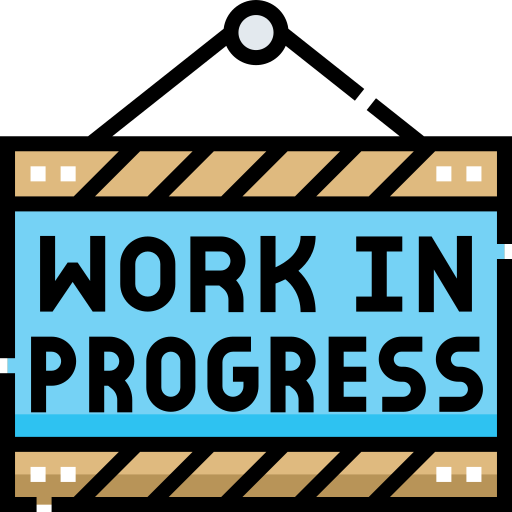
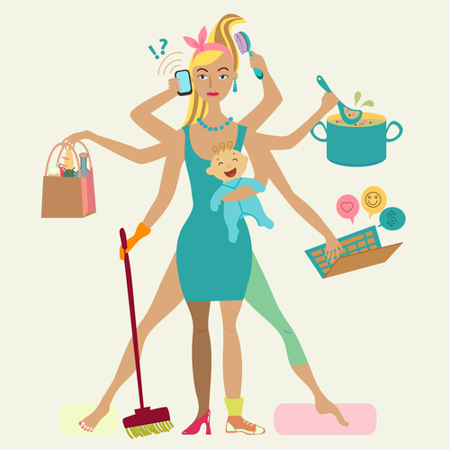
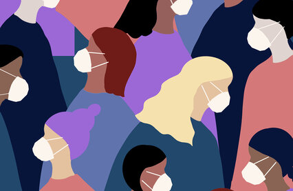
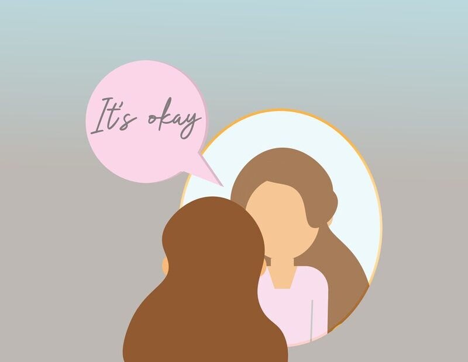
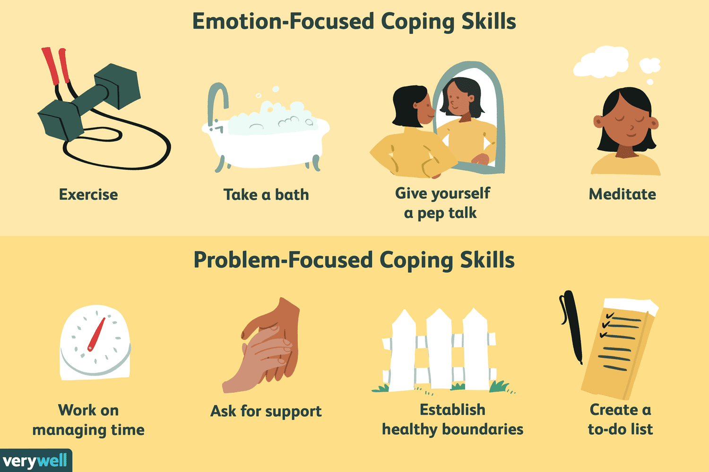
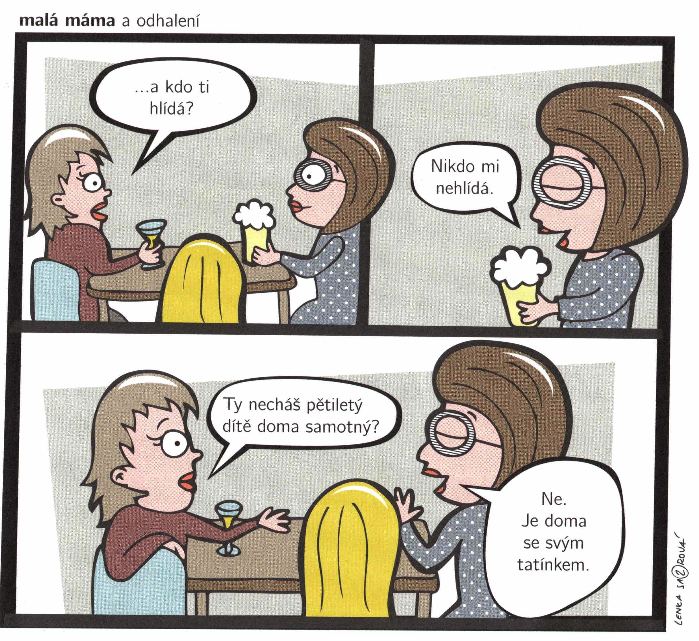

<div style="text-align: center"> </div> --- ## Práce a dítě: Jak být k sobě laskavější --- <div style="font-size: 100%;"> ```python $ whoami > Pricipal Scientist, Community Engagement v DNAnexus > Spoluzakladatelka sedlakovi.org > ....Kurzy pro firmy a jednotlivce > ........Programování > ........Data science > ....Konzultace v bioinformatice a data science > Maminka 3 dětí: 5 let, 3 roky a 5 měsíců ``` </div> --- ## Disclaimer 1 Nevím všechno. Vezměte z mého příběhu jen to, co se líbí vám. --- ## Disclaimer 2 <div style="text-align: center">  </div> --- - Před dětmi <!-- .element: class="fragment" --> - Doktorát <!-- .element: class="fragment" --> - Začátky v Python a R <!-- .element: class="fragment" --> - Perfekcionismus <!-- .element: class="fragment" --> --- <div style="text-align: center">  </div> --- - První mateřská <!-- .element: class="fragment" --> - Poporodní deprese <!-- .element: class="fragment" --> - Velké očekávání od sebe <!-- .element: class="fragment" --> - Snaha být jako většina <!-- .element: class="fragment" --> --- <div style="text-align: center"> </div> --- - Druhá mateřská <!-- .element: class="fragment" --> - Poporodní deprese <!-- .element: class="fragment" --> - Covid <!-- .element: class="fragment" --> - Snaha být vnímáná jako "dobrá matka" <!-- .element: class="fragment" --> --- <div style="text-align: center">  </div> --- - Třetí mateřská <!-- .element: class="fragment" --> - Únava <!-- .element: class="fragment" --> - Jasnější pochopení priorit <!-- .element: class="fragment" --> - Soucit k sobě <!-- .element: class="fragment" --> --- <div style="text-align: center">  </div> --- - Z čeho čerpám energii <!-- .element: class="fragment" --> - Čas o samotě <!-- .element: class="fragment" --> - Pohyb <!-- .element: class="fragment" --> - Tvoření <!-- .element: class="fragment" --> --- ## Otázka Z čeho čerpáte energii? --- ## Strategie zvládání stresu - copingové strategie - Zaměřené na problém <!-- .element: class="fragment" --> - Zaměřené na emoce <!-- .element: class="fragment" --> - Zaměřené na únik <!-- .element: class="fragment" --> - Závislost <!-- .element: class="fragment" --> - Nadměrná agrese <!-- .element: class="fragment" --> - Potlačení nebo popření <!-- .element: class="fragment" --> --- <div style="text-align: center;">  </div> --- ## Otázka Jaké jsou vaše strategie zvládání stresu? --- ## Jak to mám já (ideální situace) - Dopředu dávám vědět, když nejsem OK <!-- .element: class="fragment" --> - Snažím se vést se sebou soucitný dialog <!-- .element: class="fragment" --> - Dýchám 🧘 <!-- .element: class="fragment" --> - Psychoterapie <!-- .element: class="fragment" --> --- <div style="text-align: center;">  </div> --- ## Plánování - Čas pro sebe <!-- .element: class="fragment" --> - Čas pro manžela <!-- .element: class="fragment" --> - Společný čas bez dětí <!-- .element: class="fragment" --> - Individuální čas pro starší dětí <!-- .element: class="fragment" --> --- ## Pohovor - Nehledám pozice, u kterých musí být pracovní pohotovost/neustálá dostupnost online <!-- .element: class="fragment" --> - Během pohovoru se snažím zjistit jaká je firemní kutura, ideálně jdu do firmy na doporučení někoho známého <!-- .element: class="fragment" --> - O částečném úvazku mluvím vždy až s potenciálním vedoucím <!-- .element: class="fragment" --> - [Způsoby jak vtipně napsat mateřskou do životopisu](https://cafemom.com/lifestyle/115171-40_funny_ways_to_say) <!-- .element: class="fragment" --> - Můj favorit: Sleep Scientist (work mostly night shifts) <!-- .element: class="fragment" --> --- ## V práci - Nepoužívám pracovní notebook k osobním věcem <!-- .element: class="fragment" --> - Na svůj osobní telefon sdílím jen pracovní kalendař <!-- .element: class="fragment" --> - Pracovní google chat vidím jen na pracovním mobilu/notebooku <!-- .element: class="fragment" --> - V kalendáří mám označený konec pracovní doby večer jako out of office/family time <!-- .element: class="fragment" --> - Jeden den v týdnu mám celodenní událost Focus time — no meetings <!-- .element: class="fragment" --> - Když mám pracovní cesty, vybírám náhradní volno <!-- .element: class="fragment" --> --- ## Práce z domova <div style="text-align: center;"> </div> --- ## Viditelnost v práci - Seznam svých úspěchů --- ## Můj typický pracovní den <table class="tg" style="font-size: 50%;"> <thead> <tr> <td class="tg-nuol">6:30 - 7:00</th> <td class="tg-pvk6">Vstávám </th> </tr> </thead> <tbody> <tr> <td class="tg-pvk6">7:00 - 8:30<br></td> <td class="tg-pvk6"> Společně s manželem chystáme děti do školky</td> </tr> <tr> <td class="tg-pvk6">8:30</td> <td class="tg-pvk6"> Chůva odchází se všemi dětmi do školky</td> </tr> <tr> <td class="tg-pvk6">8:30 - 10:00 </td> <td class="tg-pvk6"> Fitness nebo práce na vedlejších projektech</td> </tr> <tr> <td class="tg-pvk6">10:00 - 18:00 </td> <td class="tg-pvk6"> Práce na hlavním projektu (včetně několika přestávek na kojení)</td> </tr> <tr> <td class="tg-pvk6">18:00 </td> <td class="tg-pvk6"> Chůva přivádí děti ze školky</td> </tr> <tr> <td class="tg-pvk6">18:00 - 19:00 </td> <td class="tg-pvk6"> Společná večeře</td> </tr> <tr> <td class="tg-pvk6">19:00 - 21:00</td> <td class="tg-pvk6"> Společně s manželem chystáme děti na spaní</td> </tr> <tr> <td class="tg-pvk6">21:00 - 22:00 </td> <td class="tg-pvk6"> Čas pro sebe nebo s manželem nebo práce na vedlejších projektech</td> </tr> <tr> <td class="tg-pvk6">22:00 - 22:30</td> <td class="tg-pvk6"> Chystám se na spaní</td> </tr> <tr> <td class="tg-pvk6">22:30</td> <td class="tg-pvk6"> Spím (nebo se o to alespoň snažím 🙃)</td> </tr> </tbody> </table> --- <div style="text-align: center"> Dobrá Maminka <hr> <p style="text-align: center">Má špatné dny + skvělé dny</p> <p style="text-align: center">+ normální dny + vyčerpávající dny</p> <p style="text-align: center">+ naplánované dny + nestíhací dny </p> <p style="text-align: center">+ perfektní dny + já to nedám dny</p> <p style="text-align: center">+ super matka dny + šílené dny</p> </div> --- ## Děkuji za váš čas <div style="text-align: center"> <img src="img/support.avif" style="max-width: 30%;align-self: center;"> </div>